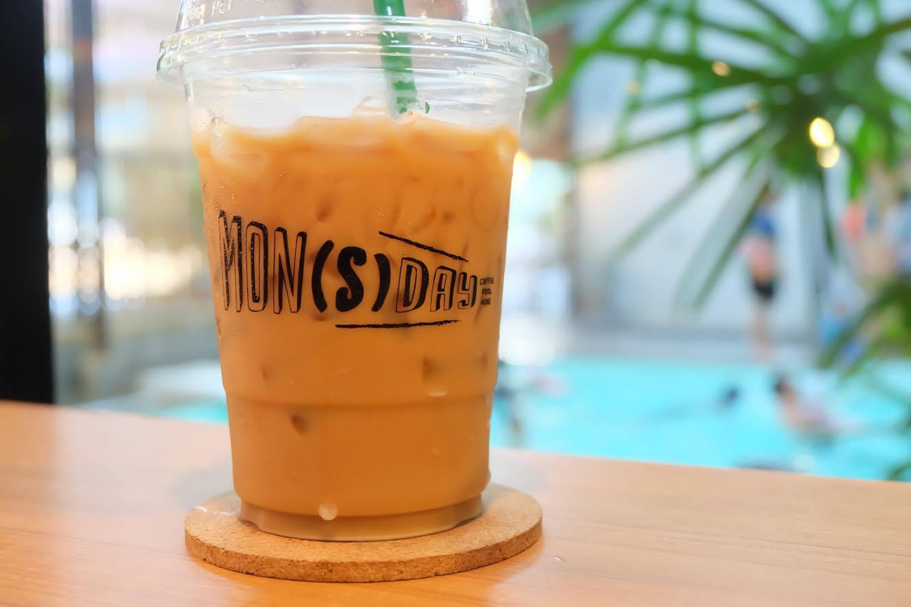
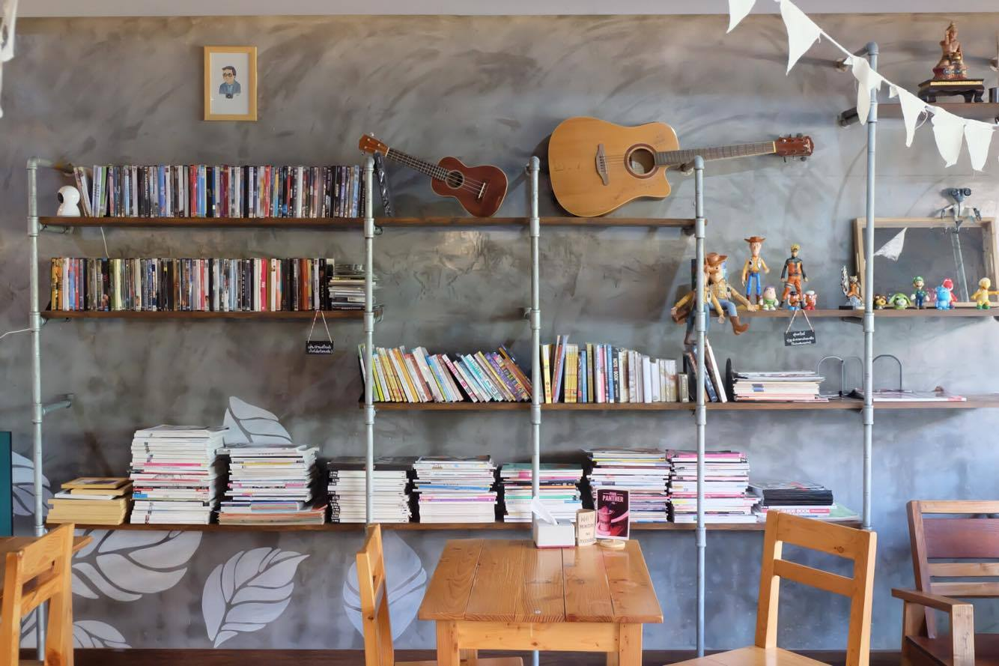

Mon(s)day Cafe
ต่อด้วยอีกร้านที่จะรีวิวกันในวันนี้ก็คือ Mon(s)day Cafe นั่นเอง
มาดูบรรยากาศโดยรวมภายในร้านกันครับ
และนี่ก็คือกลุ่มพวกผมเองครับมากับเพื่อนๆร่วมเอกอีก 2-3 คนนั่งสั่งกาแฟกันชิลล์ๆ
มีมุมหนังสือจิบกาแฟด้วย เท่ไปอีกพี่สอง

ร้านนี้ทางกลุ่มผมได้ลองสั่ง Affogato มาลองทานกันดูนะครับรสชาดโอเคเลยทีเดียวเเต่พอกินไปสักพักก็เริ่มเอือนเเล้วหรือเป็นเพราะทางเราไม่คุ้นเคยกับกาแฟรสชาดเเบบนี้ก็ไม่ทราบนะครับ ฮาๆๆ]

ก่อนคนจ้าาาา!!!
มุมถ่ายภาพยอดฮิตประจำร้าน ซึ่งเจ้าของรีวิวแอบเอามาเป็นภาพหน้าปกของเพจเรานี่เอง 5555555

มีสระว่ายน้ำกับฟิตเนสด้วยนะเออ Healthy สุดๆ